Press kit
False Edge
A co-op dungeon crawler where every cut is drawn and every blow is simulated.
- Steam Early Access · date TBD
- Price TBD
- Windows · Linux
- 1–4 players online
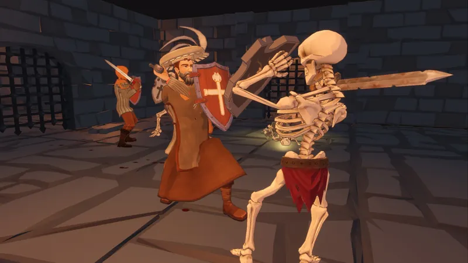
- Developer
- Nathaniel Voorhies, working as Hexmonger (solo developer)
- Publisher
- Hexmonger (self-published)
- Release
- Steam Early Access, date TBD
- Price
- TBD
- Platforms
- Windows and Linux / SteamOS (Steam)
- Genre
- Co-op action dungeon crawler (roguelike)
- Players
- 1–4, online co-op through Steam
- Input
- Keyboard and mouse; partial controller support
- Languages
- English
- Engine
- Godot 4.6
- Steam
- TBD (the page isn’t public yet)
- Website
- hexmonger.com/false-edge
- Press contact
- press@hexmonger.com
About the game
In one sentence
To writeOne sentence a writer can lift whole: what False Edge is and what is new about it.
Short description
A co-op dungeon crawler where every blow is simulated. Draw your cut across the enemy with the mouse, and the physics decides what it does: through a gambeson, off a shield, into the bone. Fight down through generated dungeons alone or with up to three friends online.
Long description
To writeFour or five paragraphs: the drawn cut and the simulation, the party and co-op, the generated dungeon, the classes, Early Access and what comes after.
Features
To writeSix bullets, each a bold claim and a line under it (the fight, co-op, the dungeon, the bestiary, classes and enchantments, the creator and the replay).
Trailer

The trailer will be here and on YouTube, with the 1080p master on request.
Screenshots
1920×1080, captured from the running game, the same set as the Steam page. No watermarks or logos: crop them freely.


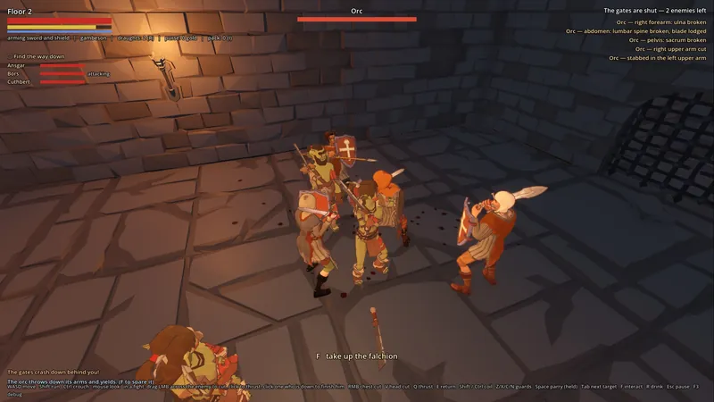

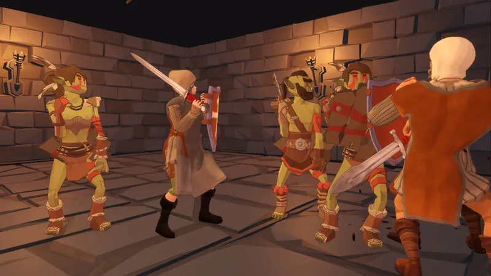

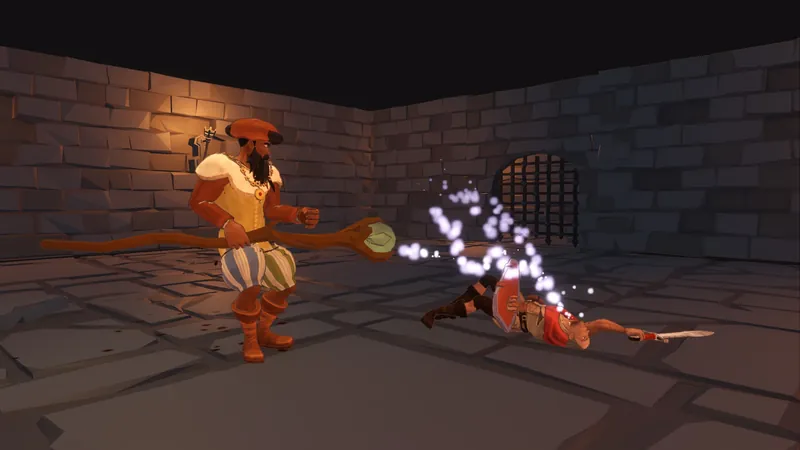

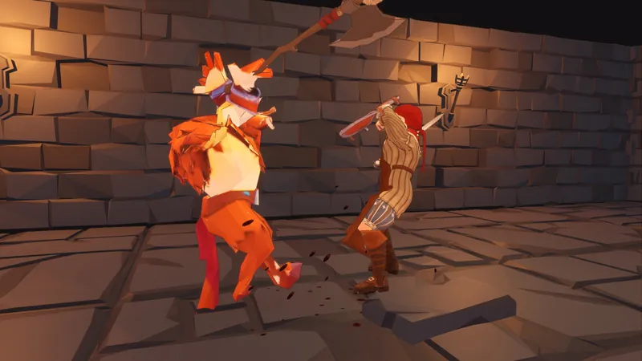

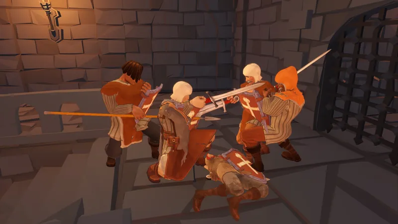

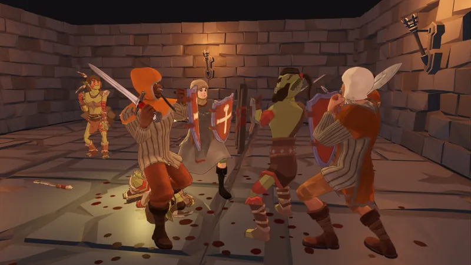

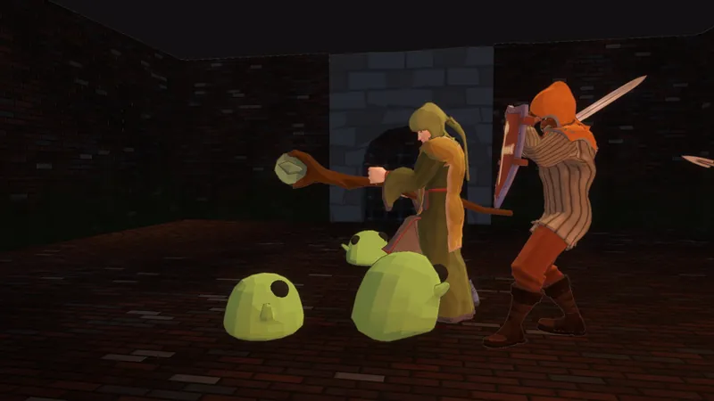

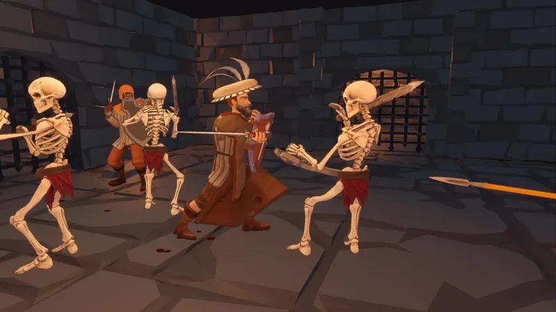

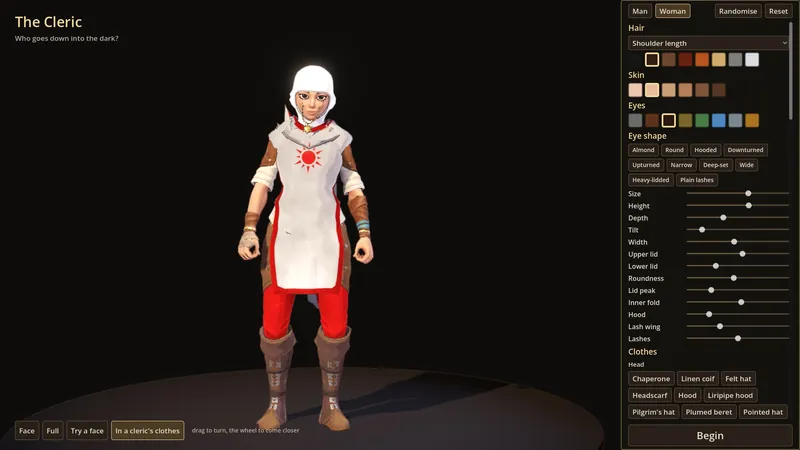

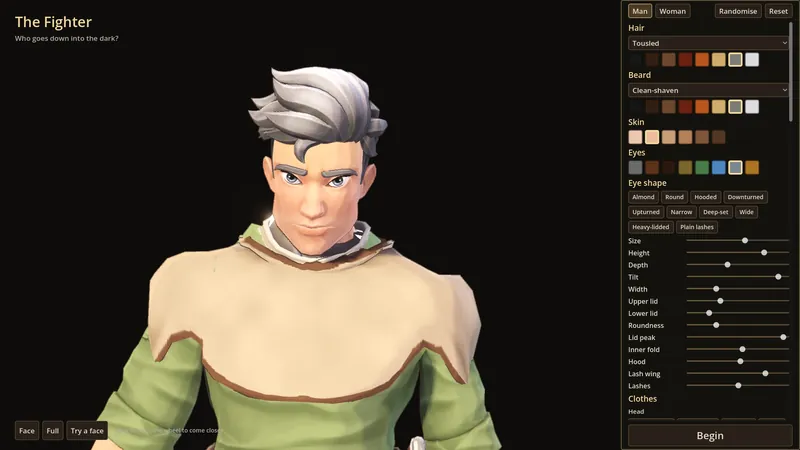
4K stills
To come: the strongest of these captured again at 3840×2160.
Logo, icon and key art
To come. The Steam capsules made so far are placeholders (a screenshot with the name set on it), so the kit leaves them out.
Keys, streaming and video
Steam keys go to press, streamers and video creators once Early Access opens. Email press@hexmonger.com with a link to your outlet or channel.
Streaming and monetization: you are welcome to stream, record and monetize video of False Edge on any platform, and you do not need to ask first. Screenshots from this kit may be used in coverage of the game.
Credits
- Design and programming: Nathaniel Voorhies
- Engine: Godot 4
To write3D art, animation, music, sound and fonts.
About Hexmonger
Hexmonger is the independent game studio of Nathaniel Voorhies, who worked on GPU architecture at NVIDIA and on machine-learning accelerators and their compilers at Google before turning to games. It makes small games with deep systems underneath: sand that behaves like sand, cities that generate themselves, and stories that ask you to understand rather than fight.
- Founder
- Nathaniel Voorhies, solo developer
- Business
- Sole proprietorship: Nathaniel Voorhies, doing business as Hexmonger
- Based in
- San Mateo County, California, USA
- Games
- Castles in the Sand, a cozy beach-building game with real water, out now on iPhone and iPad
Cozy Necromancy, a cozy mystery RPG with no combat
Tin Coffins, a cel-shaded mech roguelite shooter
False Edge, a co-op dungeon crawler, in development
To writeA paragraph on False Edge’s history: when it started, the sword-fighting simulation under it, and the story campaign set in the same world.
Contact
Talk to the developer
Interviews, keys, questions, or a picture you can’t find here: email Nathaniel directly. There is no form.